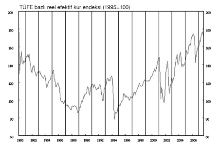

PİYASA PARAMETRELERİ
Finansal piyasaların performansını tahmin etmeden önce onların ciğerini bilmekte yarar var. Piyasalarda hangi katılımcılar bulunur ve bu katılımcılar hangi parametreleri (değişkenleri) dikkate alırlar? Dikkate aldıkları değişkenleri analiz ettikten sonra nasıl karar verirler? Bu kararları sonucunda hangi yatırım araçlarını alır ya da satarlar?
Burada kritik olan değişkenler faiz ve döviz kurudur aslında. Piyasa oyuncuları (çocuk oyuncağı değil), bu değişkenlerin ne yönde hareket edeceklerini tahmin etmeye çalışır. Bir kere değişkenlerin yönü tahmin edilebildiğinde, yatırımların da ne yönde yapılacağı açığa çıkacaktır.
Hisse senedi piyasasından doğrudan bahsetmedik; çünkü faiz ve döviz kurunun yönü ortaya çıktığında hisse senedi piyasası hakkında da fikir sahibi olunacağı varsayılır. Oysa çoğu kez hisse senedi piyasasının yönünün bilimsel ve mantıklı hiçbir açıklamaya uymadan, öngörülemez biçimde ve yönde hareket ettiği gözlemlenmiştir. Bu anlamda çoğu kez, hisse senedi piyasasının diğer ekonomik değişkenlerle ilişkisinin istatistiki olarak anlamsız (hareketinin diğer değişkenlere bakarak kestirilemez) olduğu gözlemlenmiştir.
Buna göre, piyasaların hareketlerini tahmin etmeye çalışmadan önce, kısaca faiz ve döviz gibi piyasa değişkenlerinin özelliklerini ve davranış biçimlerini anlamak gerekiyor. Sonuçta bu iki değişken, yatırım araçlarının performansını doğrudan etkiliyor.
FAİZ
Pek çok akademisyen arkadaşımız pek beğenmese de faiz temel olarak paranın zaman değeri ya da paranın fiyatıdır. Buna göre faiz, fon arz ve talep eden taraflar karşılaştıklarında, fon (para) sahibi olan tarafın parasından belli bir süre için uzak kalmasının karşılığı olarak borcu verdiği taraftan istediği kiradır.
Belli bir ekonomi bünyesindeki piyasalarda pek çok faiz oranı vardır. Temelde birbirlerinden ayrı otorite ya da katılımcılar tarafından belirlenen bu faizler, birbirleriyle hiç de alakalı değilmiş gibi görünebilirler.
Bu birbirleriyle pek ilgili gibi görünmeyen faiz oranlarının aynı ülke ekonomisinde, farklı piyasalarda uzun süre birbirlerinden bağımsız davranmaları beklenemez. Aynı ekonomide, aynı aktörler vardır ve bu aktörler aynı değişkenlerden etkilenip yine aynı değişkenleri etkilemeye çalışırlar. Nasıl tümüyle aynı olan bir mal, pazarda iki farklı fiyattan satılamazsa para da çok farklı faiz oranlarından el değiştiremez.
Buna göre, piyasalarda farklı faiz oranları vardır; ancak bunlar birlikte hareket ederler ve zaman içinde birbirlerine yakınlaşırlar. Bu durum, aslında faizlerde bir tek trend (eğilim) olduğu şeklinde de özetlenebilir. Bir tek makro trend.
Çok kısa vadede faizlerin yönsüz olduğu düşünülebilir ya da farklı faizlerin yönleri kısa vadede faklı görülebilir. Ancak orta ve uzun vadede, tümü de aynı yöne doğru hareket edecektir.
Ekonomideki temel faiz oranı Merkez Bankası’nın (MB) açıklamış olduğu gecelik (Over Night – O/N) faiz oranıdır. Hem gecelik borç verme hem de borçlanma faizi olmak üzere, birbirine yakın iki ayrı faiz oranı açıklanır. Merkez Bankası O/N faiz oranı, MB gösterge faiz oranı ya da MB politika faiz oranı olarak da isimlendirilir. Bu oran, aslında teorik bir faizdir ve piyasanın kendi hesabını bu faizi baz alarak yapması amacıyla bir gösterge niteliğiyle saptanır ve açıklanır.
Merkez Bankası’nın açıklamış olduğu gecelik faizi dikkate alan piyasalar, bir bakıma ülke hazinesinin de nasıl bir faiz oranından borçlanmayı uygun gördüğünü algılarlar ve bu durum, aslında arz talep koşullarına göre oluşan hazine bonosu faizlerini de belirler. Burada ciddi bir tavuk-yumurta ilişkisi vardır: “MB, O/N faizlerini belirleyerek hazinenin borçlanma faizi konusunda piyasaya sinyal verir” şeklinde algılamak da, “MB, piyasanın borç verme konusundaki isteği ya da isteksizliğini dikkate alarak makul faiz seviyesini saptar” demek de mümkündür.
O hâlde MB gecelik faizleri ile hazine borçlanma faizleri (hazine bonosu ve devlet tahvili) arasında ciddi bir ilişki vardır. Bu iki faizin oturduğu seviye, günlük hayattaki faiz hadlerini de belirler. Sistemdeki tüm faizler, aslında farkında olmadan bu çerçevede oluşmuştur: vade farkları, otomobil kredileri, mevduat faizleri.
MB gecelik faiz oranları ve hazine faizleri oturduktan sonra bankalar maliyetlerini ayarlar ve mevduat faizlerini saptarlar. Maliyet seviyesi saptandığında derhâl kredi faizleri de saptanır. Az önce belirttiğimiz gibi, elbette tüm bu faizler aynı oranda değildir; ama benzer hareketler içindedirler.
Örneğin, MB gecelik faizleri arttırdığında hazine bonosu faizleri de yükselir. Bu durum genel faiz hadlerini yükseltmiş demektir ve bankalar da hemen mevduat faizlerini buna göre ayarlarlar. Mevduat faizlerinin artması bankaların gözünde maliyetlerin artması anlamına geleceğinden gelir tarafına da yansımalıdır: Kredi faizleri de arttırılır.
Elbette bu hikâyenin tam tersi, yani faizlerin düşmesi senaryosu da geçerlidir. Hikâye, genelde MB faiz değişikliği ile başlar. Ancak kriz anlarında dalganın hazine bonosu faizlerindeki hızlı hareket ile başladığı ve ardından MB faizlerinin hareketi teyit amacıyla arkadan geldiği de görülmüştür. Bu ikincisine ülkemizden en iyi iyi örnek 2000 Kasım ve 2006 Mayıs dalgalarıdır.
Tekrar etmek gerekirse, piyasada pek çok faiz oranı vardır; ancak tümü de birbirini kollar ve zaman içinde tek bir trend yönünde yakınlaşır.
DÖVİZ KURU
Bir paranın diğer bir para cinsinden değerini gösteren kur, diğer bir tanıma göre de yabancı paranın yerli para cinsinden fiyatıdır.
Temel olarak iki döviz kuru vardır:
• Denge Kur (Piyasadaki mevcut döviz kuru)
• Teorik Kur (Olması gereken kur)
Eğer “etkin piyasa” kavramına inananlardansanız denge kur tartışılmazdır. Sonuçta piyasada arz ve talep serbestçe karşılaşmış ve mevcut kur düzeyi oluşmuştur ve bu düzeyin teoriyle hiçbir alıp veremediği yoktur. Eğer siz kurun düşük olduğunu düşünüyorsanız, bu fırsatı kaçırmamalı ve döviz satın almalısınız. Yok eğer döviz kurunun olması gereken seviyeden daha yukarıda olduğunu, yani yabancı paranın ederinin çok üzerinde bir fiyattan el değiştirdiğini düşünüyorsanız bu kez de onu satmalısınız.
Bu yaklaşıma göre piyasada arz ve talep karşılaşmıştır. Piyasa hatalı olamaz, oluşan kur doğrudur. Eğer size göre kur doğru değilse de alım ya da satım yaparak bu durumdan yararlanabilirsiniz. Bu arada, akıntıya karşı kürek çekenlerin pek az kısmının başarılı olduğunu, olduğunda da gerçekten başarılı olduğunu belirtmekte yarar var.
Teorik kur ise, piyasanın yanılabileceğini varsayar ve bir olması gereken kur düzeyi hesaplamaya çalışır. Teoride para da bir “mal”dır ve fiyatı diğer mallar gibi enflasyon karşısında değer yitirir. Olması gereken kurun çeşitli hesaplama biçimleri olmakla birlikte pratikte en sık kullanılan ve kabul gören yöntem Reel Efektif Döviz Kuru Endeksi (REDKE) hesaplamasıdır.
REDKE yöntemi paraların enflasyon kadar değer yitirdiğini varsayar. Dolayısıyla zaman içinde iki ülke parasının birbirine karşı, iki ülkenin enflasyon oranı farkı kadar (düşük enflasyonlu ülke lehine) değişime uğrayacağını varsayar. Bu durumda, Türkiye’de enflasyon oranı ABD enflasyonunun üzerinde olduğu sürece YTL’nin USD karşısındaki değeri teoride sürekli düşmelidir.
Bu endeksin hazırlanması oldukça güç bir iştir; ama sağ olsunlar merkez bankaları bunu her ay hesaplarlar. Bizim Merkez Bankamız (TCMB) da bu endeksi hesaplar ve bize düşen endekse bakarak minik bir yorum yapmaktır. TCMB’nin hesabına göre, eğer REDKE değeri 100 ise paramız yabancı paralar karşısında tam da olması gereken yerdedir. Buna karşılık, eğer değer 100’ün üzerinde ise YTL aşırı değerli, 100’ün altında ise YTL aşırı değer kaybetmiş demektir. Bu analizin kısıtlama ve eleştirilerini bir kenara bırakarak www.tcmb.gov.tr adresinden Reel Efektif Döviz Kuru Endeksi değerini TÜFE (Tüketici Fiyatları Endeksi) için her ay bir kez gözden geçirmenizi öneriyoruz.

İncelerken dikkat edilmesi gereken nokta, endeks değerinin çok yukarılarda olmasının YTL’nin aşırı değerli olduğu ve bu anlamda döviz kurunun daha da düşme ihtimalinin zayıfladığı, değerin 100 bazın çok altında olmasının ise tam tersine döviz kurunun yükselme ihtimalinin düşme ihtimaline göre daha çok olduğudur. Bu anlamda 1994 ve 2001 krizlerinin ardından, kur artışına paralel olarak endeksteki harekete dikkatinizi çekmek isteriz.
Eğer döviz, bir yatırım aracı olarak görülmeseydi, kişi ve kurumlar spekülatif olarak döviz işlemi yapmasalardı ve sıcak para bu kadar hızlı bir biçimde sisteme girip çıkabiliyor olmasaydı teorik kur ile denge kur birbirine çok yakın olurdu. Ancak her üçü de var olduğuna göre, teorik kur ile pratik kur aynı olmaktan uzak kalacak ve ne yazık ki biz hep dövizin düşük ya da yüksek seyrettiğinden bahsedeceğiz. (“Biz”den kasıt kim ki?)
O hâlde...
Finansal piyasaları inceleme çabamızda ilk adımın faiz oranları ve döviz kurunun tahmini olduğunu belirttik.
Faiz oranının paranın zaman değeri olduğunu, piyasada pek çok faiz oranı bulunduğunu, ama bunların birbirleriyle ilişkide olduklarını ve orta vadede aynı yönde yakınlaşacaklarını belirttik. Faiz cephesinde seviyenin Merkez Bankası gecelik borçlanma ve hazine borçlanma faizleri ile belirlendiğini, kredi ve mevduat faizlerinin de bunlara göre oluştuğunu saptadık.
Döviz kurunu ise paranın yabancı bir para cinsinden fiyatı biçiminde tanımladık ve temel olarak iki farklı kur olduğunu söyledik:
• Denge Döviz Kuru (Arz talep sonucunda piyasada oluşan mevcut kur)
• Teorik Kur (Enflasyon da dikkate alınarak hesaplanan, olması gereken kur)
Son olarak da teorik kurun hesaplanmasında kullanılan baz yöntemi (REDKE) tanıtıp denge kur ile teorik kur arasındaki farkın nedenlerini açıklamaya çalıştık.